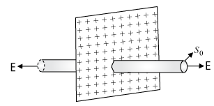
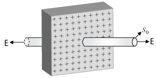

Coulomb's Inverse-square law
It states that the electrostatic force of interaction between tw int charges at rest is directly proportional to the product of the charge and inversely proportional to the square of the distance between them.
ie, \( F \propto q_1 q_2 \)
\( F \propto \frac{1}{r^2} \)
\( F \propto \frac{q_1 q_2}{r^2} \)
or \( F = k \frac{q_1 q_2}{r^2}..........(i) \)
where, k is constant of proportionality. Its value depends upon the system of units and on the nature of medium between the charges. When the two charges are located in vacuum or air
\( k = \frac{1}{4 \pi \varepsilon_0} \) (in SI unit)
where, \( \varepsilon_0 \) is called absolute permittivity of free space and its value is \( 8.85 \times 10^{-12}C^2N^{-1}m^{-2} \) .
\( \therefore \) In SI unit, Eq. (i) in presence of vacuum can be written as
\( F = \frac{1}{4 \pi \varepsilon_0} \frac{q_1 q_2}{r^2} \)
or \( F = 9 \times 10^9 \times \frac{q_1 q_2}{r^2} \)
Coulomb's Law in Vector Form
Let \( q_1 \) and \( q_2 \) be the two point charges separated by distance r in vacuum. Let \( \overrightarrow{F}_{21} \) be the force on \( q_2 \) due to \( q_1 \) and \( \overrightarrow{F}_{12} \) the force on \( q_1 \) due to \( q_2 \) .
Then \( F_{21} = k \frac{q_1q_2}{r^2}........(i) \)
where \( \hat{r_{12}} \) is a unit vector pointing from \( q_1 \) to \( q_2 \) .
Also \( F_{12} = k \frac{q_1 q_2}{r^2} \hat{r}_{21}........(ii) \)
where \( \hat{r}_{21} \) is a unit vector pointing from \( q_2 \) to \( q_1 \) .
Importance of Coulomb's law in vector form
It follows from Eqs. (i) and (ii), thus \( \hat{F}_{21} = - \hat{F}_{12} \) .
The force exerted by the two charges o each other is equal and opposite. (Newton's third law is obeyed)
Intensity of Electric Field
The space surrounding an electric charge q in which another charge \( q_0 \) experiences a force of attraction or repulsion, is called the electric field of charge q. The charge q is called the source charge and the charge \( q_0 \) is called the test charge. The test charge must be negligibly small so that it does not modify the electric fieltithe source charge.
Intensity (or Strength) of Electric Field (E)
The intensity of electric field at a point in an electric field is th ratio of the forces acting on the test charge placed at that point to the magnitude of the test charge.
\( \overrightarrow{E} = \frac{\overrightarrow{F}}{q_0} \) , where \( \overrightarrow{F} \) is the force acting on \( q_0 \) .
Electric field intensity \( (\overrightarrow{E}) \) is a vector quantity.
The direction of electric field is same as that of force acting on the positive test charge. Unit of E is \( NC^{-1} \) or \( Vm^{-1} \) .
Dimensions of Electric Field
The unit of E is newton/coulomb \( = \frac{kg \times metre-sec^{-2}}{ampere \times sec} = kg \times metre \times sec^{-3} \times ampere^{-1} \)
\( \therefore \) dimensions of electric field are \( [MLT^{-3} A^{-1}] \)
Forces exerted by a field on a charge inside it
From \( \overrightarrow{E} = \frac{\overrightarrow{F}}{q} \) we get
\( \overrightarrow{F} = q \overrightarrow{E} \)
If q is positive charge, \( \overrightarrow{F} \) on it is in the direction of \( \overrightarrow{E} \) .
If q is negative charge, \( \overrightarrow{F} \) on it is opposite to the direction of \( \overrightarrow{E} \)
Calculation of Electric Field Intensity \( \overrightarrow{E} \) at a Distance rfrom a Point Charge q
\( \overrightarrow{F} = \frac{1}{4 \pi \varepsilon_0} \frac{q}{r^2} Vm^{-1} = 9 \times 10^9 \frac{9}{r^2} Vm^{-1} \)
where \( q \rightarrow coulomb \) and \( r \rightarrow metre \)
Due to positive charge electric field intensity is directed from charge to point or away from the charge
Due to negative charge electric field intensity is directed from point to charge or towards the charge.
Due to a number of charges electric field intensity at a point is vector sum of electric field intensities due to individual charges
ie, \( \overrightarrow{E} = \overrightarrow{E_1} + \overrightarrow{E_2} + \overrightarrow{E_3} + ........ + \overrightarrow{E_n} \)
\( = \frac{1}{4 \pi \varepsilon_0} \frac{q_1}{r_1^2} + \frac{1}{4 \pi \varepsilon_0} \frac{q_2}{r_2^2} + ......... + \frac{1}{4 \pi \varepsilon_0} \frac{q_n}{r_n^2} \)
\( = \frac{1}{4 \pi \varepsilon_0} \sum \limits_{i = 1}^{n} \frac{q_i}{r_i^2} \)
on in vector from \( \overrightarrow{E_i} = \frac{1}{4 \pi \varepsilon_0} \frac{q}{r_i^3} \overrightarrow{r} i \)
While for continuous charge distribution (treating small charge element as a point charge),
\( d \overrightarrow{E} = \frac{1}{4 \pi \varepsilon_0} \frac{d q}{r^3} \overrightarrow{r} \)
ie, \( \overrightarrow{E} = \frac{1}{4 \pi \varepsilon_0} \int \frac{dq}{r^3} \)
For linear charge distribution, \( dq = \lambda dl \)
For surface charge distribution, \( dq = \sigma dS \)
For volume charge distribution, \( dq = \rho dV \)
Gauss's Law
The total normal electric flux over a closed Gaussian surface is \( \frac{1}{\varepsilon_0} \times \) total charge enclosed within the surface.
ie, \( \oint \overrightarrow{E} . \overrightarrow{dS} = \frac{1}{\varepsilon_0} \times q \)
Total electric flux \( \phi = \frac{1}{\varepsilon_0} \times q \) V-m,
where q = total enclosed charge.
If total enclosed charge is zero ie, \( \sum q = 0 \) , then total electric flux = 0.
If a closed body, not enclosing any charge, is placed in an electric field (either uniform or non-uniform), total flux linked with it will be zero.
Applications of Gauss's Law
To calculate E we choose an imaginary closed surface (called Gaussian surface) in which Gauss's equation can be applied easily. Let us discuss few simple cases.
Electric field due to a point charge
\( ES = \frac{q_0}{\varepsilon_0} \)
From, S = area of sphere \( = 4 \pi r^2 \)
And \( q_{in} \) = charge enclosing the Gaussian surface = q
\( E(4 \pi r^2) = \frac{q}{\varepsilon_0} \)
\( E = \frac{1}{4 \pi \varepsilon_0} \frac{q}{r} \)
Electric field due to a linear charge distribution
Consider a long line charge with a linear charge density (charge per unit length) \( \lambda \) . We have to calculate the electric field at a point, at a distance r from the line charge. We construct a gaussain surface, a cylinder of any arbitrary length l of radius r and its axis coinciding with the axis of the line charge. Hence, we can apply the Gauss's law as,
\( ES = \frac{q_{in}}{\varepsilon_0} \)
Here, S = area of curved surface \( = (2 \pi rl) \)
and \( q_{in} = \) net charge enclosing this cylinder \( = \lambda l \)
\( \therefore E(2 \pi r l) = \frac{\lambda}{2 \pi \varepsilon_0 r} \)
ie, \( E \propto \frac{1}{r} \)
Electric field due to a plane sheet of charge
From Gauss's law

\( ES = \frac{q_{in}}{\varepsilon_0} \)
\( \therefore E(2S_0) = \frac{(\sigma)(S_0)}{\varepsilon_0} \)
\( \therefore E = \frac{\sigma}{2 \varepsilon_0} \)
Electric field near a charged conducting surface
This is similar to the previous one the only difference Vk that this time charge are on both sides. Hence, applying.

Here, \( S = 2S_0 \) and \( q_{in} = (\sigma)(2S_0) \)
\( E(2S_0) = \frac{(\sigma)(2S_0)}{\varepsilon_0} \)
\( E = \frac{\sigma}{\varepsilon_0} \)
Summary
-
Electric and magnetic forces determine the properties of atoms, molecules and bulk matter.
-
From simple experiments on frictional electricity, one can infer that there are two types of charges in nature; and that like charges repel and unlike charges attract. By convention, the charge on a glass rod rubbed with silk is positive; that on a plastic rod rubbed with fur is then negative.
-
Conductors allow movement of electric charge through them, insulators do not. In metals, the mobile charges are electrons; in electrolytes both positive and negative ions are mobile.
-
Electric charge has three basic properties: quantisation, additivity and conservation.
Quantisation of electric charge means that total charge (q) of a body is always an integral multiple of a basic quantum of charge (e) i.e., q = n e, where \( n = 0, \ \pm 1, \ \pm 2, \pm 3,.... \) Proton and electron have charges +e, -e, respectively. For macroscopic charges for which n is a very large number, quantisation of charge can be ignored.
Additivity of electric charges means that the total charge of a system is the algebraic sum (i.e., the sum taking into account proper signs) of all individual charges in the system.
Conservation of electric charges means that the total charge of an isolated system remains unchanged with time. This means that when bodies are charged through friction, there is a transfer of electric charge from one body to another, but no creation or destruction of charge.
-
Coulomb's Law: The mutual electrostatic force between two point charges \( q_1 \) and \( q_2 \) is proportional to the product \( q_1 q_2 \) and inversely proportional to the square of the distance \( r_{21} \) separating them. Mathematically,
\( F_{21} = force \ on \ q_2 \ due \ to q_1 = \frac{k (q_1 q_2)}{r_{21}} \hat{r_{21}} \)
\( \hat{r_{21}} \) is a unit vector in the direction from \( q_1 \ to \ q_2 \) and \( k = \frac{1}{4 \pi \epsilon_{0}} \) is the constant of proportionality.
In SI units, the unit of charge is coulomb. The experimental value of the constant \( \epsilon_{0} \) is
\( \epsilon_{0} = 8.854 \times 10^{-12} \ C^2 \ N^{-1} \ m^{-2} \)
The approximate value of k is
\( k = 9 \times 10^9 \ N m^2 \ C^{-2} \)
-
The ratio of electric force and gravitational force between a proton and an electron is
\( \frac{k e^2}{G \ m_e \ m_p} \ \cong \ 2.4 \times 10^{39} \)
-
Superposition Principle: The principle is based on the property that the forces with which two charges attract or repel each other are not affected by the presence of a third (or more) additional charge(s). For an assembly of charges \( q_1, \ q_2, \ q_3, ..., \) the force on any charge, say \( q_1 \) , isthe vector sum of the force on q1 due to \( q_2 \) , the force on q1 due to \( q_3 \) , and so on. For each pair, the force is given by the Coulomb's law for two charges stated earlier.
-
The electric field E at a point due to a charge configuration is the force on a small positive test charge q placed at the point divided by the magnitude of the charge. Electric field due to a point charge q has a magnitude \( \frac{|q|}{4 \pi \epsilon_{0} r^2} \) ; it is radially outwards from q, if q is positive, and radially inwards if q is negative. Like Coulomb force, electric field also satisfies superposition principle.
-
An electric field line is a curve drawn in such a way that the tangent at each point on the curve gives the direction of electric field at that point. The relative closeness of field lines indicates the relative strength of electric field at different points; they crowd near each other in regions of strong electric field and are far apart where the electric field is weak. In regions of constant electric field, the field lines are uniformly spaced parallel straight lines.
-
Some of the important properties of field lines are:
-
Field lines are continuous curves without any breaks.
-
Two field lines cannot cross each other.
-
Electrostatic field lines start at positive charges and end at negative charges - they cannot form closed loops.
-
An electric dipole is a pair of equal and opposite charges q and -q separated by some distance 2a. Its dipole moment vector p has magnitude 2qa and is in the direction of the dipole axis from -q to q.
-
Field of an electric dipole in its equatorial plane (i.e., the plane perpendicular to its axis and passing through its centre) at a distance r from the centre:
\( \begin{align} E = \frac{-p}{4 \pi \epsilon_{0}} \frac{1}{(a^2 + r^2)}^{\frac{3}{3}} \\\\[3pt]
\cong \ \frac{-p}{4 \pi \epsilon_{0} \ r^2} \ \ \ \ \ for \ r \gg \ a \end{align} \) Dipole electric field on the axis at a distance r from the centre:
\( \begin{align} E = \frac{2pr}{4 \pi \epsilon_{0}(r^2 - a^2)^2} \\\\[3pt]
\cong \ \frac{2p}{4 \pi \epsilon_{0} r^2} \ \ \ \ for \ r \gg a \end{align} \)
The \( \frac{1}{r^3} \) dependence of dipole electric fields should be noted in contrast to the \( \frac{1}{r^2} \) dependence of electric field due to a point charge.
-
In a uniform electric field E, a dipole experiences a torque \( \tau \) given by
\( \tau = P \times E \)
but experiences no net force.
-
The flux \( \triangle{\phi} \) of electric field E through a small area element \( \triangle{S} \) is given by
\( \triangle{\phi} = E. \triangle{S} \)
The vector area element \( \triangle{S} \) is
\( \triangle{S} = \triangle{S} \ \hat{n} \)
where \( \triangle{S} \) is the magnitude of the area element and \( \hat{n} \) is normal to the area element, which can be considered planar for sufficiently small \( \triangle{S} \) For an area element of a closed surface, \( \hat{n} \) is taken to be the direction of outward normal, by convention..
-
Gauss's law: The flux of electric field through any closed surface S is \( \frac{1}{\epsilon_{0}} \) times the total charge enclosed by S. The law is especially useful in determining electric field E, when the source distribution has simple symmetry:
-
Thin infinitely long straight wire of uniform linear charge density \( \lambda \)
\( E = \frac{\lambda}{2 \pi \ \epsilon_{0} \ r} \hat{n} \)
where r is the perpendicular distance of the point from the wire and \( \hat{n} \) is the radial unit vector in the plane normal to the wire passing through the point.
-
Infinite thin plane sheet of uniform surface charge density \( \sigma \)
Infinite thin plane sheet of uniform surface charge density \( E = \frac{\sigma}{2 \ \epsilon_{0}} \hat{n} \)
where \( \hat{n} \) is a unit vector normal to the plane, outward on either side.
-
Thin spherical shell of uniform surface charge density \( \sigma \)
\( \begin{align} E = \frac{q}{4 \ \epsilon_{0} r^2} \hat{r} \ \ \ \ \ (r \geq \ R) \\\\[3pt]
E = 0 \ \ \ \ \ ( r < R) \end{align} \)
where r is the distance of the point from the centre of the shell and R the radius of the shell. q is the total charge of the shell: \( q = 4 \pi R^2 \sigma \) .
The electric field outside the shell is as though the total charge is concentrated at the centre. The same result is true for a solid sphere of uniform volume charge density. The field is zero at all points inside the shell
Solved examples
Example 1:
How can you charge a metal sphere positively without touching it?
Solution

Figure (a) shows an uncharged metallic sphere on an insulating metal stand. Bring a negatively charged rod close to the metallic sphere, as shown in Fig. (b). As the rod is brought close to the sphere, the free electrons in the sphere move away due to repulsion and start piling up at the farther end. The near end becomes positively charged due to deficit of electrons. This process of charge distribution stops when the net force on the free electrons inside the metal is zero. Connect the sphere to the ground by a conducting wire. The electrons will flow to the ground while the positive charges at the near end will remain held there due to the attractive force of the negative charges on the rod, as shown in Fig.(c). Disconnect the sphere from the ground. The positive charge continues to be held at the near end [Fig. (d)]. Remove the electrified rod. The positive charge will spread uniformly over the sphere as shown in Fig.(e).
In this experiment, the metal sphere gets charged by the process of induction and the rod does not lose any of its charge.
Similar steps are involved in charging a metal sphere negatively by induction, by bringing a positively charged rod near it. In this case the electrons will flow from the ground to the sphere when the sphere is connected to the ground with a wire. Can you explain why?
Example 2:
If \( 10^9 \) electrons move out of a body to another body every second, how much time is required to get a total charge of 1 C on the other body?
Solution
In one second \( 10^9 \) electrons move out of the body.
Therefore the charge given out in one second is \( 1.6 \times 10^{-19} \times 10^9 \ C = 1.6 \times 10^{-10} \ C \) .
The time required to accumulate a charge of 1 C can then be estimated to be \( 1C \div (1.6 \times 10^{-10} \ C/s) = 6.25 \times 10^9 \ s = 6.25 \times 10^9 \div (365 \times 24 \times 3600) years = 198 \ years \) .
Thus to collect a charge of one coulomb, from a body from which \( 10^9 \) electrons move out every second, we will need approximately 200 years. One coulomb is, therefore, a very large unit for many practical purposes.
It is, however, also important to know what is roughly the number of electrons contained in a piece of one cubic centimetre of a material. A cubic piece of copper of side 1 cm contains about \( 2.5 \times 10^{24} \) electrons.
Example 3:
How much positive and negative charge is there in a cup of water?
Solution
Let us assume that the mass of one cup of water is 250 g. The molecular mass of water is 18g. Thus, one mole (= 6.02 \times 1023 molecules) of water is 18 g. Therefore the number of molecules in one cup of water is \( \left ( \frac{250}{18} \right ) \times 6.02 \times 10^23 \) . Each molecule of water contains two hydrogen atoms and one oxygen atom, i.e., 10 electrons and 10 protons. Hence the total positive and total negative charge has the same magnitude. It is equal to
\( \left (\frac{250}{18} \right ) \times 6.02 \times 10^{23} \times 10 \times 1.6 \times 10^{-19} \ C = 1.34 \times 10^7 \ C \) .
Example 4:
A charged metallic sphere A is suspended by a nylon thread. Another charged metallic sphere B held by an insulating handle is brought close to A such that the distance between their centres is 10 cm, as shown in Fig. (a). The resulting repulsion of A is noted (for example, by shining a beam of light and measuring the deflection of its shadow on a screen). Spheres A and B are touched by uncharged spheres C and D respectively, as shown in Fig (b). C and D are then removed and B is brought closer to A to a distance of 5.0 cm between their centres, as shown in Fig. (c). What is the expected repulsion of A on the basis of Coulomb's law? Spheres A and C and spheres B and D have identical sizes. Ignore the sizes of A and B in comparison to the separation between their centres.

Solution
Let the original charge on sphere A be q and that on B be q'. At a distance r between their centres, the magnitude of the electrostatic force on each is given by
\( F = \frac{1}{4 \pi epsilon_{0}} \frac{q q'}{r^2} \)
neglecting the sizes of spheres A and B in comparison to r. When an identical but uncharged sphere C touches A, the charges redistribute on A and C and, by symmetry, each sphere carries a charge \( \frac{q}{2} \) . Similarly, after D touches B, the redistributed charge on each is \( \frac{q'}{2} \) . Now, if the separation between A and B is halved, the magnitude of the electrostatic force on each is
\( F' = \frac{1}{4 \pi \epsilon_{0}} \frac{ \left ( \frac{q}{2} \right ) \left ( \frac{q'}{2} \right ) }{\left ( \frac{r}{2} \right )^2} = \frac{1}{4 \pi \epsilon_{0}} \frac{(qq')}{r^2} = F \)
Thus the electrostatic force on A, due to B, remains unaltered.
Example 5:
Consider three charges \( q_1, \ q_2, \ q_3 \) each equal to q at the vertices of an equilateral triangle of side l. What is the force on a charge Q (with the same sign as q) placed at the centroid of the triangle, as shown in Fig. ?

Solution
In the given equilateral triangle ABC of sides of length l, if we draw a perpendicular AD to the side BC,
\( \begin{align} AD = AC \ cos 30^{\circ} = \left( \frac{ \\\\sqrt{3}}{2} \right ) l \end{align} \) and the distance AO of the centroid O from A is \( \begin{align} \left( \frac{2}{3} \right ) AD = \left( \frac{1}{ \\\\sqrt{3}} \right ) l \end{align} \) . By symmatry AO = BO = CO.
Force \( F_1 \) on Q due to charge q at A = \( \frac{3}{4 \pi \epsilon_{0}} \frac{Qq}{l^2} \) along AO
Force \( F_2 \) on Q due to charge q at B = \( \frac{3}{4 \pi \epsilon_{0}} \frac{Qq}{l^2} \) along BO
Force \( F_3 \) on Q due to charge q at C = \( \frac{3}{4 \pi \epsilon_{0}} \frac{Qq}{l^2} \) along CO
The resultant of forces \( F_2 \) and \( F_3 \) is \( \frac{3}{4 \pi \epsilon_{0}} \frac{Qq}{l^2} (\hat{r} - \hat{r}) = 0 , \ where \ \hat{r} \) along OA, by the parallelogram law. Therefore, the total force on Q \( \frac{3}{4 \pi \epsilon_{0}} \frac{Qq}{l^2} \) where rˆ is the unit vector along OA.
It is clear also by symmetry that the three forces will sum to zero. Suppose that the resultant force was non-zero but in some direction. Consider what would happen if the system was rotated through \( 60^{\circ} \) about O.
Example 6:
Consider the charges q, q, and -q placed at the vertices of an equilateral triangle, as shown in Fig. What is the force on each charge?

Solution
The forces acting on charge q at A due to charges q at B and -q at C are \( F_{12} \) along BA and \( F_{13} \) along AC respectively, as shown in Fig. By the parallelogram law, the total force \( F_1 \) on the charge q at A is given by
\( F_1 = F \hat{r_1} \ where \ \hat{r_1} \) is a unit vector along BC.
The force of attraction or repulsion for each pair of charges has the
\( F = \frac{q^2}{4 \pi \epsilon_{0} l^2} \)
The total force \( F_2 \) on charge q at B is thus \( F_2 = F \ \hat{r_2} \) , where \( \hat{r_1} \) is a unit vector along AC.
Similarly the total force on charge -q at C is \( F_3 = \sqrt{3} \ F \ \hat{n} \) where \( \hat{n} \) is the unit vector along the direction bisecting the \( \angle{BCA} \) .
It is interesting to see that the sum of the forces on the three charges is zero, i.e.,
\( F_1 + F_2 + F_3 = 0 \)
The result is not at all surprising. It follows straight from the fact that Coulomb's law is consistent with Newton's third law. The proof is left to you as an exercise.
Example 7:
An electron falls through a distance of 1.5 cm in a uniform electric field of magnitude \( 2.0 \times 10^4 \ N \ C^{-1} \) [Fig.(a)]. The direction of the field is reversed keeping its magnitude unchanged and a proton falls through the same distance [Fig.(b)]. Compute the time of fall in each case. Contrast the situation with that of 'free fall under gravity'.

Solution
In Fig.(a) the field is upward, so the negatively charged electron experiences a downward force of magnitude eE where E is the magnitude of the electric field. The acceleration of the electron is
\( a_e = \frac{eE}{m_e} \)
where \( m_e \) is the mass of the electron.
Starting from rest, the time required by the electron to fall through a distance h is given by
\( \begin{align} t_e = \sqrt{ \frac{2h}{a_e}} = \sqrt{ \frac{2hm_e}{eE}} \\\\[3pt]
For e = 1.6 \times 10^{-19} \ C, \ m_e = 9.11 \times 10^{-31} \ kg, \\\\[3pt]
E = 2.0 \times 10^4 \ N \ C^{-1}, \ h = 1.5 \times 10^{-2} \ m, \ t_e = 2.9 \times 10^{-9} \ s \end{align} \)
In Fig. (b), the field is downward, and the positively charged proton experiences a downward force of magnitude eE. The acceleration of the proton is
\( a_p = \frac{eE}{m_p} \)
where \( m_p \) is the mass of the proton; \( m_p = 1.67 \times 10^{-27} \ kg \) . The time of fall for the proton is
\( t_p = \sqrt{ \frac{2h}{a_p}} = \sqrt{ \frac{2hm_p}{eE}} = 1.3 \times 10^{-7} \ s \)
Thus, the heavier particle (proton) takes a greater time to fall through the same distance. This is in basic contrast to the situation of 'free fall under gravity'’ where the time of fall is independent of the mass of the body. Note that in this example we have ignored the acceleration due to gravity in calculating the time of fall. To see if this is justified, let us calculate the acceleration of the proton in the given electric field:
\( \begin{align} a_p = \frac{eE}{m_p} \\\\[3pt]
= \frac{(1.6 \times 10^{-19} \ C) \times (2.0 \times 10^4 \ N \ C^{-1}}{1.67 \times 10^{-27} \ kg } = 1.9 \times 10^{12} \ m \ s^{-2} \end{align} \)
which is enormous compared to the value of g \( (9.8 \ m \ s^{-2} ) \) , the acceleration due to gravity. The acceleration of the electron is even greater. Thus, the effect of acceleration due to gravity can be ignored in this example.